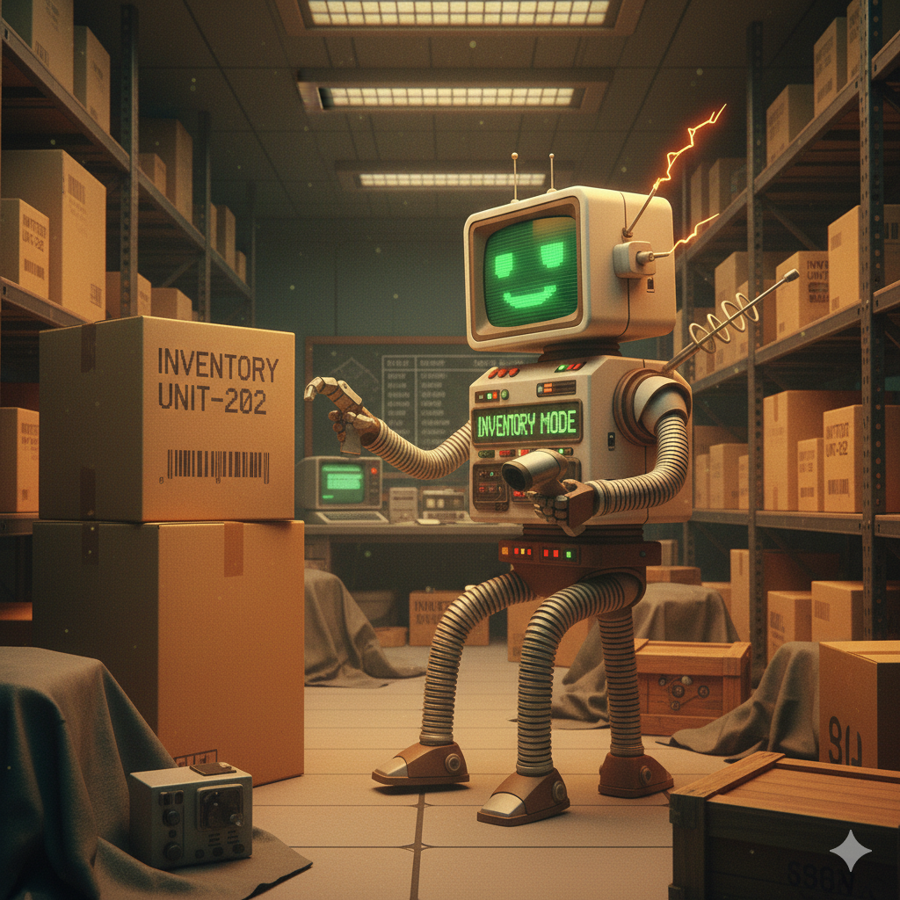

Caller
VOICE AUTOMATIONA voice agent that connects to a phone trunk to handle calls and support phone-based workflows.
ENGINEERING / AUTOMATION / AI
I connect software, hardware, and practical AI to make everyday work simpler, from phone automation to document search and customer conversations.
Communication and information tools designed to connect with the systems people already use.
A voice agent that connects to a phone trunk to handle calls and support phone-based workflows.

An agent that interprets instructions, identifies intent, and routes each request to the right next step.
A file-aware assistant that compares documents and finds relevant information across your materials.
Guided assistants for creation, marketing, and customer sales conversations.
A guided creation flow that turns a mission or brief into a structured starting point for an agent.
An assistant that drafts marketing copy and ad concepts for a defined audience, offer, and campaign.
A WhatsApp sales assistant designed to answer customer questions and help move conversations toward a sale.
I’m Adrian Romero Vargas, an electronics and telecommunications engineer focused on connecting clients, servers, software, and hardware.
My automation work began around 2018 with early chatbots built from dictionaries, dialogue patterns, sales scripts, and regular expressions. Since then, I’ve expanded into robotic process automation (RPA), prompt engineering, and AI agents shaped by clear instructions, structured patterns, and measurable logic.